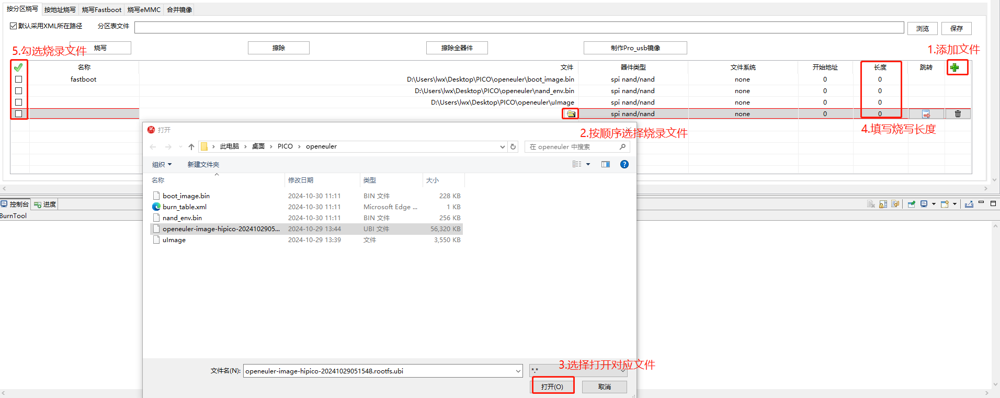

HiPico镜像烧录¶
HiPico使用ToolPlatform工具烧录HiPico开发板。
1.准备工作¶
烧录工具¶
解压ToolPlatform-CAM-5.6.58-win32-x86_64.zip之后，双击目录中ToolPlatform.exe即可使用。
镜像包内容¶
烧录镜像前需要准备好镜像包，包括以下文件：
burn_table.xml：烧录分区表
boot_image.bin：u-boot镜像
nand_env.bin：u-boot环境变量
uImage：Linux内核镜像
openeuler-image-hipico-*.rootfs.ubi：根文件系统镜像
硬件连接¶
若选择网络烧录，需连接网口和底板（即PB板）USB，网线可直接连接PC或与PC同网段路由/交换机；底板USB连接PC端。
若选择USB烧录，必须连接主板（即PICO板）USB至PC端，可以不接底板（PB板）。

网络连接示意如下。

2.网络烧录¶
打开烧录工具，第一次打开时会提示选择芯片，选择Hi3516CV610。
点击BurnTool进入烧录界面。
选择烧录方式及镜像包。
网络烧录选择传输方式为网口，刷新本地PC配置，选择按分区烧写，打开分区表文件。
ToolPlatform 选择本地PC配置说明：
根据设备管理器->端口，查看连接板端的串口，选择工具中的串口。
运行CMD命令提示符窗口，运行ipconfig，查看本机IP信息，选择工具中的服务器IP。
选择rootfs镜像。
镜像包中分区表文件未写明rootfs镜像名称，自行选择对应的镜像文件。
开始烧录。
点击烧写后，下方控制台打印蓝色字体“串口已经连接，请给单板上电，若已经上电，请断电后重新上电。”点按RST按键，重新上电。出现“#####”打印，即开始烧录。
下方的控制台会显示烧录的详细过程，烧录错误时可根据控制台中的信息判断错误原因。
烧录成功。
3.USB烧录¶
3.1 USB驱动安装¶
hitools工具可使用串口、网络、USB接口进行烧录。若不使用USB烧录则不需要进行安装USB驱动的步骤。
运行zadig_2.5.exe文件。
选择 Options->List All Devices，将 List All Devices 勾上。
进入update模式：按下update按键不松手，随后重新上下电或者按下并松开reset按键，随后可松开update按键。
在红色方框位置选择正确的设备（USBBurn），然后方框内选择驱动（libusbK）。点击“Install Driver”（未安装过）或者“Replace Driver”（已安装过）。
重新进入update模式按照上述的方式继续安装libusb-win32。
3.2 USB烧录镜像¶
打开烧录工具，第一次打开时会提示选择芯片，选择Hi3516CV610。
点击BurnTool进入烧录界面。
选择烧录方式及镜像包。

选择rootfs镜像。
开始烧录。
下方的控制台会显示烧录的详细过程，烧录错误时可根据控制台中的信息判断错误原因。
烧录成功。
4.常见烧录报错处理¶
控制台会显示烧录的详细过程，若报错，查看控制台打印详细信息做出处理。仅列出部分常见报错。
4.1 打开串口失败，可能已经打开或者不存在。¶
4.2 Timeout err.¶
控制台打印报错信息：Timeout err.
检查配置，点击烧写后一段时间未执行复位操作或重新上电操作，导致超时，下载文件失败。重新烧写，按下reset键。出现“#####”正常烧录u-boot。

4.4 报错网络下载TFTP超时¶

5.PC端设置静态IP¶
Windows系统，打开设置->网络和Internet->高级网络设置-更改适配器选项。
或者打开控制面板->网络和Internet->网络和共享中心。

右键单击以太网->属性，或点击以太网->属性；选择Internet。 协议版本4（TCP/IPv4）->属性；
选择使用下面的IP地址，输入修改的IP地址，子网掩码，默认网关；确定->关闭。

6.若没有分区表文件（xml文件），自行选择镜像文件，填写长度进行烧录并保存¶
烧录顺序为boot_image.bin->nand_env.bin->uImage->rootfs.ubi，长度建议512K，512K，4M，-（表示剩余空间），勾选需要烧录的文件，之后可点击分区表文件后“保存”按键保存分区表。
